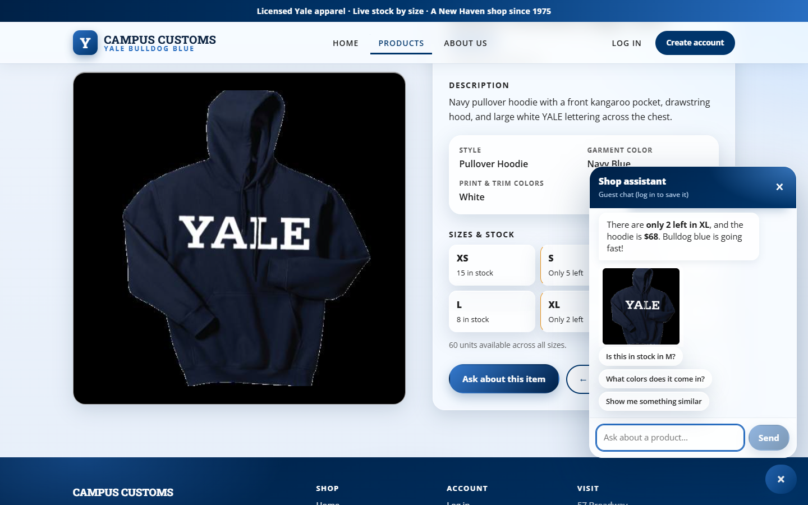
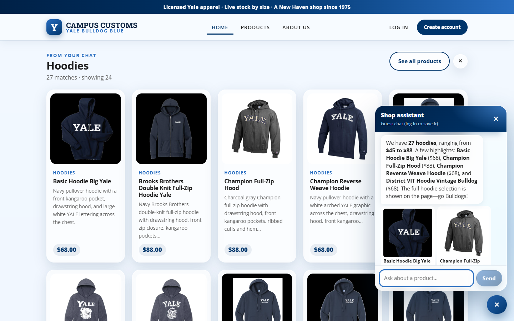
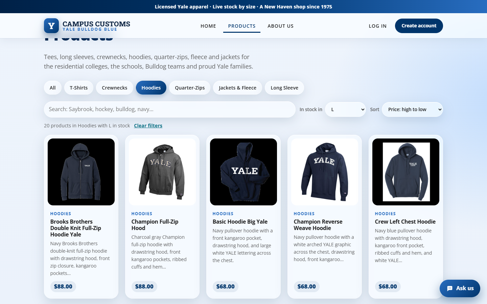

Check 1 — Chat checks an item's inventory (honest stock and price from the DB)

Asked on the Basic Hoodie Big Yale page “How many of these are left in XL, and what does it cost?”, the agent answers “only 2 left in XL … $68”, which matches the database exactly (inventory.quantity XL = 2, catalogue.price = $68) and the page's own “XL · Only 2 left” box.
Check 2 — Dynamic search-result cards after a category question

After asking “What hoodies do you have?”, the page shows a “From your chat · Hoodies” grid (27 matches · showing 24) of product cards with image, name, price and short info, built from the agent's structured results. The database has 27 hoodies.
Check 3 — Usability feature (Problem 9): Products toolbar

The new toolbar filters to Hoodies · in stock in L · price high→low and shows “20 products in Hoodies with L in stock”, most expensive first. The database has 20 hoodies with L in stock, so shoppers only see items they can actually buy in their size.